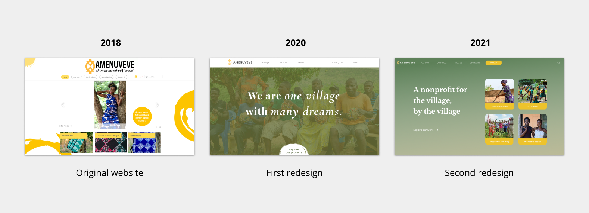
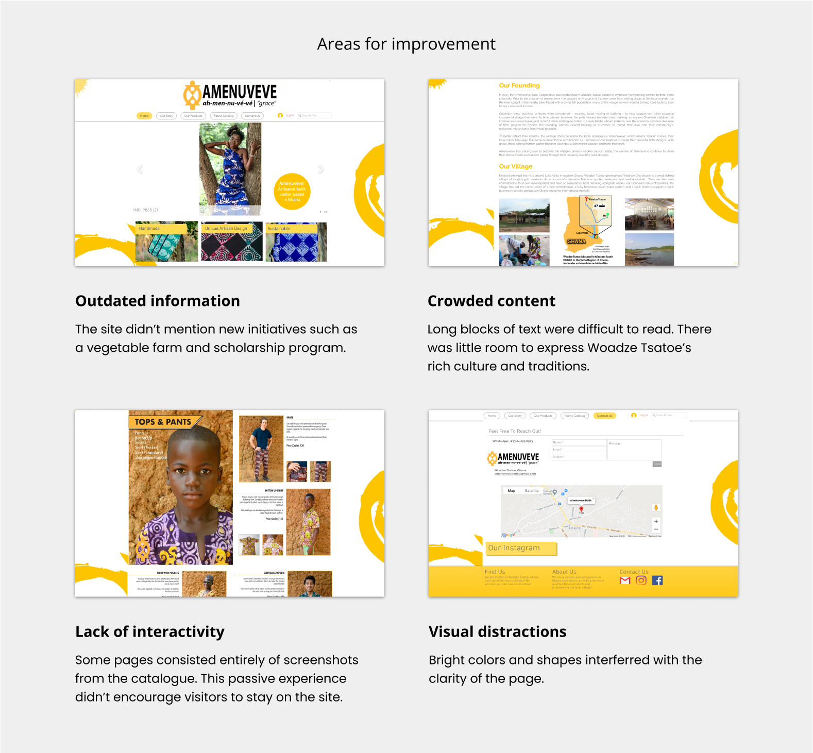
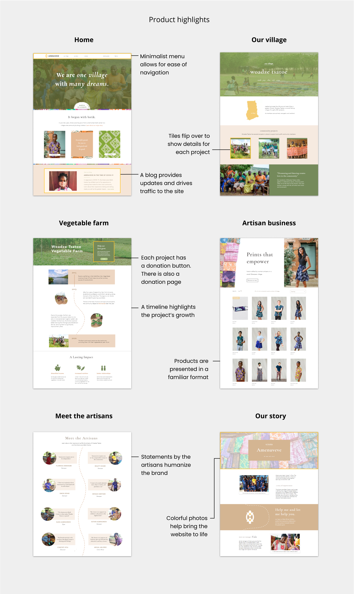
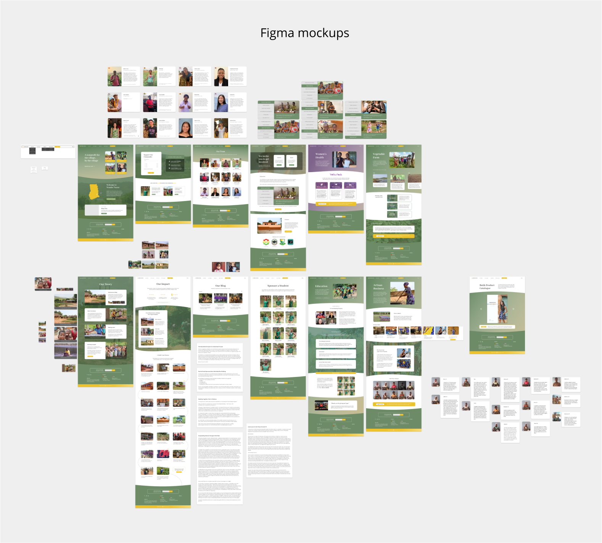
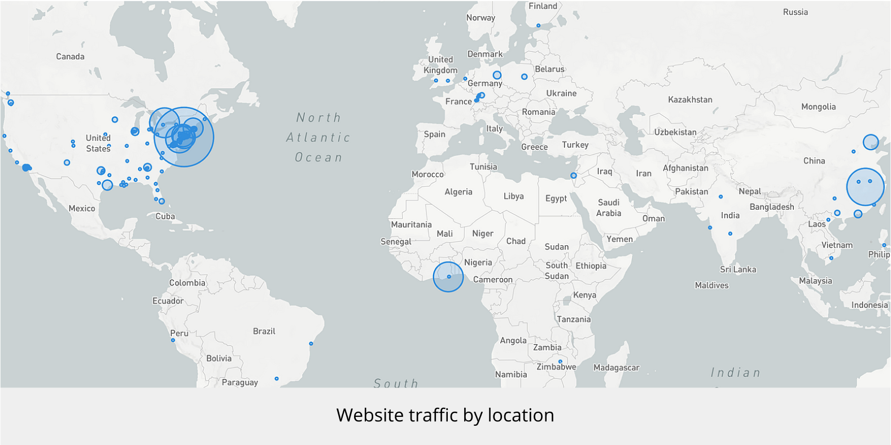

Website redesign

Type
UI / UX
Tools
Wix editor, JS
Timespan
May 2020 - Present

Amenuveve was initially a single business that was founded to empower the village women through income from batik, or the art of block-printing. A basic online store had been set up by previous students to allow visitors to view and order the batik products.
As new enterprises formed over the years, the community desired a website that could reflect the broadened scope of their work.

Throughout July 2020, I met virtually with a team of volunteers and villagers to discuss features of the redesign. My goal was to create a modern and dynamic site that would serve three purposes:
Document the progress of major projects
Showcase everyday life in the village
Streamline ordering and donations processes
By the end of August, I had completed and published my very first redesign using Wix. We had opted for a no-code platform builder in order to make management of the site accessible to all team members. The archived site can be viewed here.

Later on, the team chose to nest all current and future programs under the Amenuveve name and register it as a nonprofit. As a result, the website required a more formal appearance and better documentation to build the organization's credibility.
I approached this second redesign in a more structured manner: first, working with the team to create an information architecture, and then, drawing mockups of the pages in Figma. Each week, I would share my additions with the team for feedback, promoting a collaborative and iterative design process.

Last, I transformed the mockups into a functioning website through Wix. I even learned some custom Javascript code to implement features that weren't readily available, such as an image slider to display volunteer roles on the "Get involved" page.
This redesign is currently published and can be viewed here.
Amenuveve was a nascent organization when I first became involved, so I had no guide for the website that I set out to build.
Two years and two redesigns taught me alot— not just about design principles and heuristics, but also about effective teamwork and communication.
In terms of the former, I improved the consistency of my work. I adopted usability standards such as common labels and clear call-to-actions.
I learned to create visual hiearchy with typography, emphasis with color, and balance with white space.
I developed my skills thanks to frequent exchanges with the nonprofit team.
Their diverse backgrounds, as students, professors, and working professionals, helped me to create a website that would appeal to a broad audience
and allow Amenuveve's story to reach people around the world.

I am happy to chat more about my design process. If you’re interested, please email me at daz271@nyu.edu.